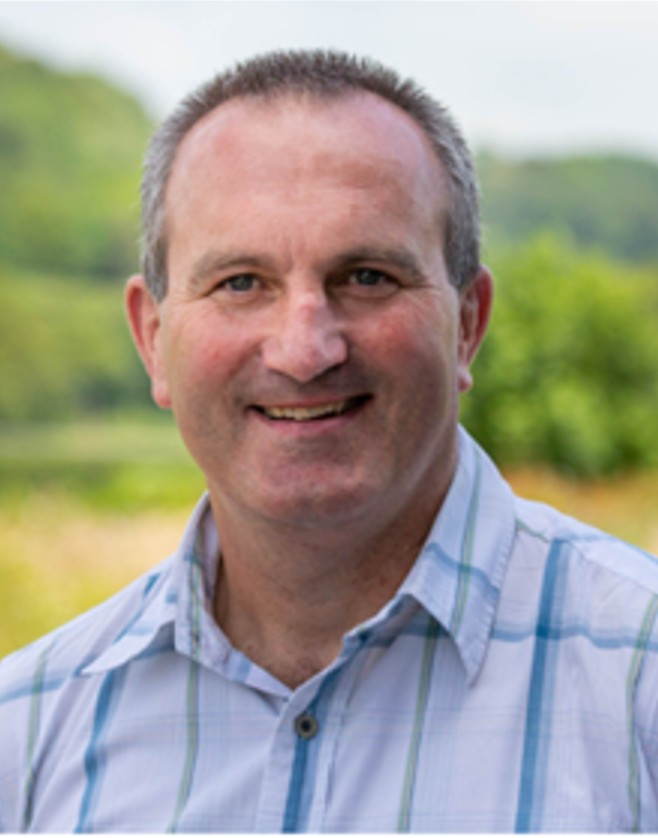

Hands-on support for project sponsors and delivery teams across Wales
Marc Davies
Digital Development Partner
Clear thinking· Practical ideas· Real progress

About
With over twenty years working directly in Wales's third sector, I understand the pressures, the culture and the people before we even start talking about technology.
I work with third sector organisations across Wales to cut through the complexity of technology change and establish a clear, practical route for improvement.
I take a humanised approach to digital, focusing on people and the human factors before identifying technology solutions. Inspiring, including, supporting and reassuring individuals through the adoption process is what makes the difference between technology that lands and technology that does not.
Not technology for technology's sake. Technology that works alongside and for the benefit of the people who use it.
Working with funders and funded projects
Digital projects don't always go to plan. Organisations take on funding with the best intentions but sometimes lack the experience, capacity or confidence to deliver what they've promised.
I offer light-touch, independent project support to funders and grant awarding bodies who want to protect their investment and help recipients succeed. A few days a month can make the difference between a project that stalls and one that delivers.
Whether it's a kick-start, a critical friend or troubleshooting a roadblock, I work alongside funded organisations and their teams to build confidence, develop capacity and get things moving. Quietly and practically, in a way that leaves the organisation stronger than I found it.
Amdanaf
Gyda dros ugain mlynedd yn gweithio yn nhrydydd sector Cymru, rwy'n deall y heriau, y diwylliant a'r bobl cyn i ni hyd yn oed ddechrau siarad am dechnoleg.
Rwy'n gweithio gyda sefydliadau trydydd sector ledled Cymru i dorri drwy gymhlethdod o ddefnydd technolegol a sefydlu llwybr clir ac ymarferol ar gyfer gwella.
Rwy'n cymryd agwedd dynol o ymdrin â'r byd digidol, gan ganolbwyntio ar bobl a ffactorau dynol cyn ystyried atebion technolegol. Mae'n hanfodol i gynnwys, ysbrydoli, a chefnogi unigolion drwy'r broses fabwysiadu technoleg i gael y cyfle gorau am lwyddiant.
Dim neidio ar dechnoleg er mwyn technoleg yn unig. Dod o hyd i dechnoleg sy'n gweithio ochr yn ochr â'r bobl sy'n ei defnyddio ac er budd defnyddwyr y gwasanaeth.
Rwy'n gweithio gyda sefydliadau trydydd sector ledled Cymru i dorri drwy gymhlethdod ddefnydd technolegol gan sefydlu llwybrau clir ac ymarferol ar gyfer gwella.
Rwy'n cymryd agwedd empathetig o ymdrin â'r byd digidol, gan ganolbwyntio ar bobl a ffactorau dynol cyn ystyried atebion technolegol. Credaf fod hi'n hanfodol i gynnwys, ysbrydoli, a chefnogi unigolion drwy'r broses o fabwysiadu technoleg er mwyn creu'r cyfle gorau i lwyddo.
Does dim pwrpas neidio ar dechnoleg er mwyn technoleg. Fy nod yw dethol datrysiadau dechnoleg sy'n gweithio - ochr yn ochr â'r bobl sy'n ei defnyddio ac er budd defnyddwyr y gwasanaeth.
Gweithio gyda chyrff ariannu a phrosiectau a ariennir
Nid yw prosiectau digidol bob amser yn mynd yn ôl y cynllun. Mae sefydliadau'n derbyn cyllid gyda'r bwriadau gorau ond weithiau nid oes ganddynt y profiad, y gallu na'r hyder i gyflawni'r hyn y maent yn bwriadu ei wneud.
Rwy'n cynnig cefnogaeth annibynnol i brosiectau a ariennir sydd angen cymorth. Fel hyn, mae gan gyrff sy'n rhoi grantiau gwell siawns o weld eu buddsoddiad yn cyflawni canlyniadau adeiladol. Gall ychydig ddyddiau'r mis wneud gwahaniaeth mawr wrth helpu prosiect i gyflawni.
Boed yn gweithio ar rwystr neu'n helpu gyda chyfeiriad, rwy'n gweithio ochr yn ochr â sefydliadau a'u timau i feithrin hyder, datblygu gallu a rhoi pethau ar waith. Mewn ffordd dawel ac ymarferol sy'n gadael y sefydliad mewn sefyllfa hyderus.
Any personal data you share by contacting me (name, email) will only be used to respond to your enquiry. It will not be shared with third parties.
You can request deletion at any time by emailing marcldavies@gmail.com
Marc Davies trading as Cwm-Ni Cyf, Company No. 13361762, Pantlleuci, Cilrhedyn, Llanfyrnach, Wales, SA35 0AA